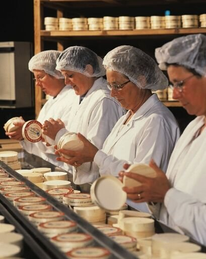
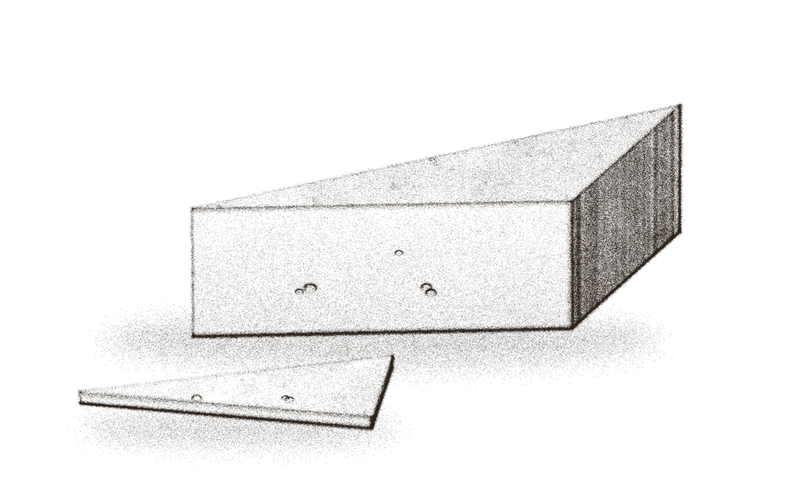

I

Le Lait
원유
가까운 목장에서 계절마다 달라지는 우유를 받아, 그 차이를 맛으로 살립니다.
Aujourd'hui
Visiter la Boutique →Nº II — La Maison
1887년부터 이어온 숙성의 연대기

Chapitre I
산골 마을의 작은 숙성고에서
1887년, 프랑스 사보이 지방의 작은 마을. 겨울이면 길이 끊기는 산골에서 여름 내내 모은 우유를 지키는 유일한 방법은 치즈로 만들어 오래 두는 것이었습니다.
첫 숙성고는 돌로 쌓은 지하 창고였습니다. 서늘한 온도와 높은 습도, 그리고 나무 선반. 지금 L'Affiné가 쓰는 숙성고도 그때의 조건을 그대로 따릅니다.
장인은 매일 아침 치즈를 하나씩 닦고 뒤집으며 상태를 기록했습니다. 그 기록이 쌓여 이 집만의 숙성 방식이 되었습니다.

Manifeste
« Nous ne fabriquons pas le goût, nous lui laissons le temps. »
우리는 맛을 만들지 않습니다. 맛이 익어갈 시간을 내어줄 뿐입니다.



Chapitre II
같은 방식, 같은 속도
숙성고 안의 시간은 바깥보다 느리게 흐릅니다. 어린 치즈는 몇 주, 단단한 산악 치즈는 1년이 넘도록 같은 자리에서 맛을 키웁니다.
우리는 숙성 기간을 앞당기지 않습니다. 치즈마다 다른 속도를 존중하는 것, 그것이 숙성 장인 — affineur의 일입니다.
Les Affineurs
대를 이어온 숙성 장인의 계보
Génération I
Joseph Morel
1887 – 1921
첫 숙성고를 연 창업자
Génération II
Henri Morel
1921 – 1958
전쟁 중에도 숙성고를 지킨 아들
Génération III
Marguerite Morel
1958 – 1994
숙성 기록을 체계로 만든 손녀
Génération IV
Antoine Morel
1994 – 현재
서울 부티크를 연 4대 affineur
Trois principes
우리가 지키는 세 가지
I
원유
가까운 목장에서 계절마다 달라지는 우유를 받아, 그 차이를 맛으로 살립니다.
II
숙성
돌벽 숙성고의 온도와 습도를 지키며, 치즈마다 필요한 시간을 기다립니다.
III
장인
닦고, 뒤집고, 두드려 듣는 일. 기계가 대신할 수 없는 손의 감각을 지킵니다.